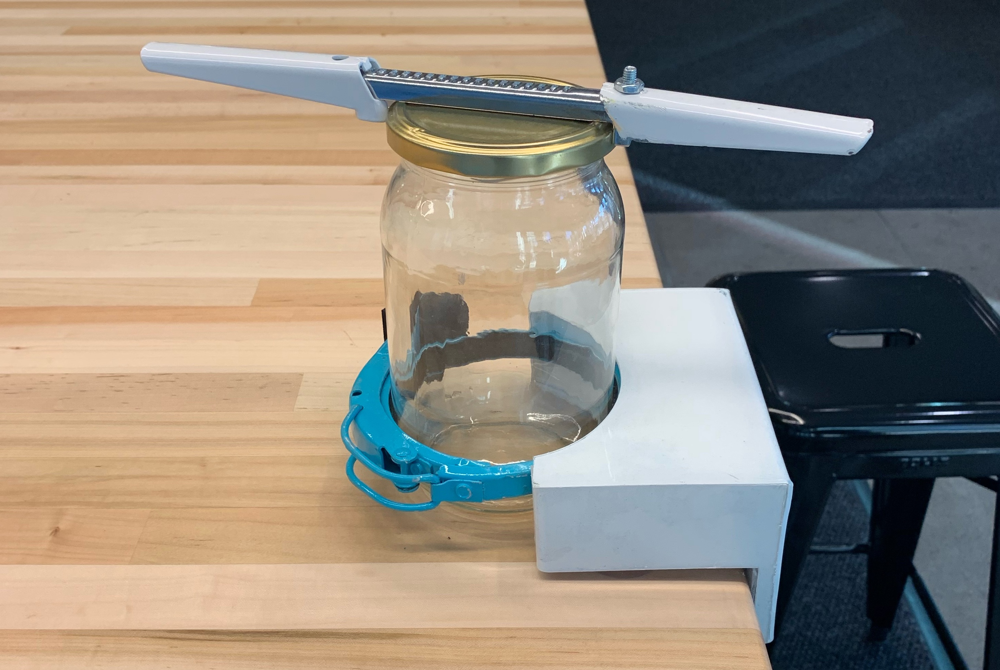
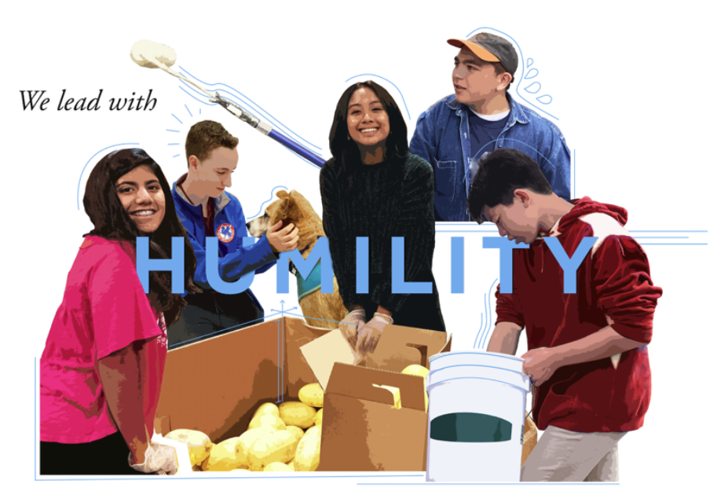

DTC JAR OPENER
For my freshman year DTC Fall 2020 class we worked with the North center to create a device that would help people with limited cognitive ability or limited dexterity to open a jar by themseleves.
GRAPHIC DESIGN
Throughout the years I have created several graphic design projects, many of which use advanced skills in Photoshop and Illustrator.
SENIOR PROJECT
At Crystal Springs Highschool everyone has to complete a project that they are passionate about - I chose graphic design. I made a series of panels and created a series of mixed media art posters that show students embodying the core values.
LAYOUTS
There are two main layouts I have done. The first is for my robotics team Space Cookies. Show are only three pages of a 100+ layout containing an overview of the team's accomplishments, organization, outreach, and business plan. Second is the sports banquet brochure. This 50 page brochure contains pictures of every sport played at the highschool that year.
LOGOS
Here are six of my favorite logos that I have created. It ranges from higschool and college clubs, a feminist confrence, class t shirts, and a fine arts festival.